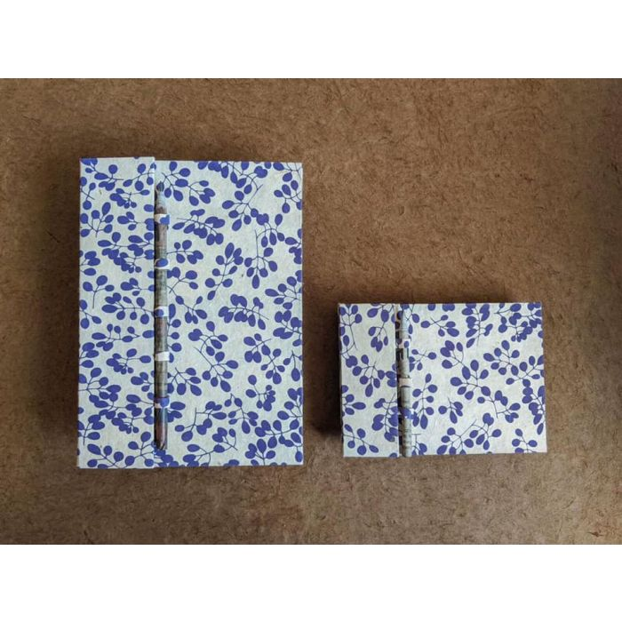
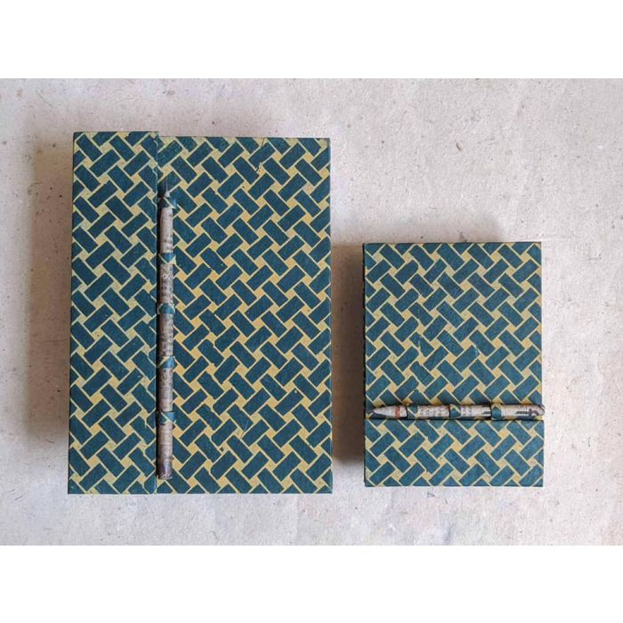

Recycled Paper Notebook Set
Handcrafted journals with Lokta fabric cover and upcycled newspaper pencil
Recycled Paper
Stationery
Journals

Blue Brick with Flower

Purple Foliage

Pink Hexagon Flower

Red Foliage

Blue and Golden Herringbone
Price: रू 760.00
Availability: In stock
SKU: RPNA5
Specifications
- 40 blank pages of 100% recycled paper
- Approximately 8.3” x 5.9” and 6” x 4.3”
- Ribbon page marker
- Hardbound with patterned Lokta cover
- Pen loop with upcycled newspaper pencil
Description
Hand crafted in Nepal, this set of multi-functional journals is made with 100% post-consumer recycled paper and is perfect for your note-taking/ journaling needs.
- 40 blank pages of 100% recycled paper
- Approximately 8.3” x 5.9”
- Ribbon page marker
- Hardbound with patterned Lokta cover
- Pen loop with upcycled newspaper pencil
The size of the journal makes it a perfect diary, notebook or a gift for your loved ones. Recycled paper is suitable for pencil and ballpoint pen.
Our products are handmade; slight variation in color, size, shape and texture make our each piece unique and special.
All our paper products are tree-free!